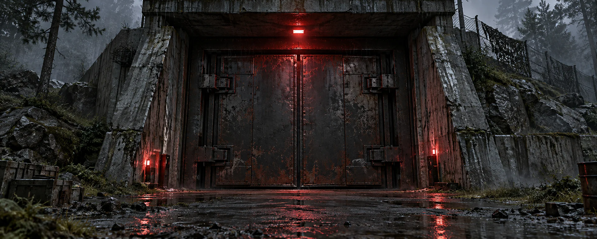
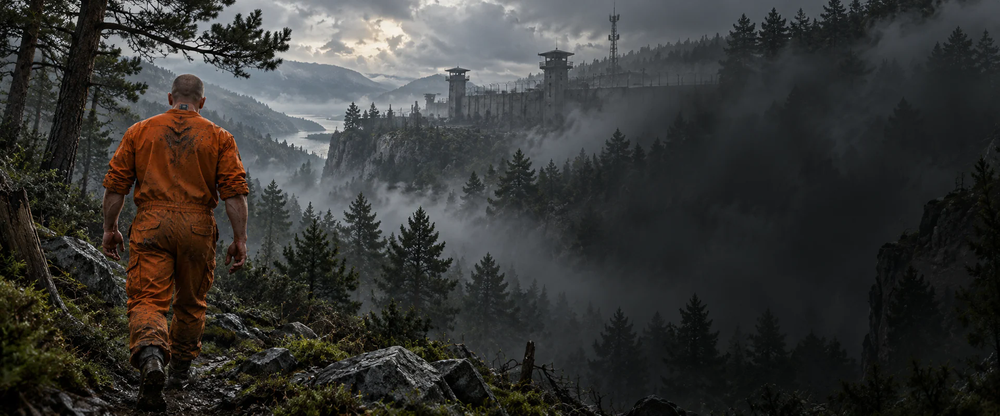
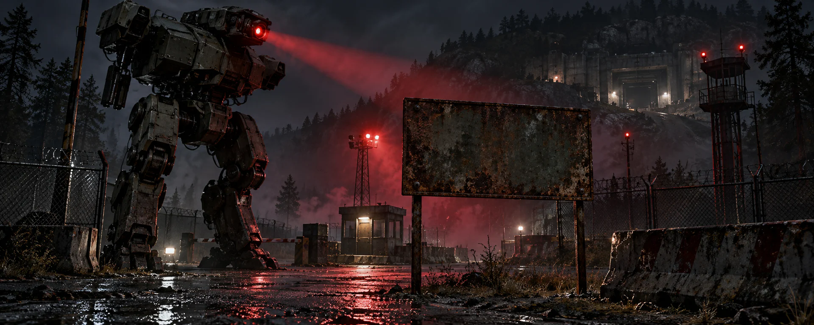

Три истории. Один штаб.
Выбери сцену и посмотри, как появляется SH. После заставки знак остаётся неподвижным.

SH
SCUM HUB
TEC1 // ACCESS GRANTED

SH
SCUM HUB
SUBJECT DETECTED // SIGNAL ACQUIRED

SH
SCUM HUB
SENTRY // TARGET IDENTIFIED